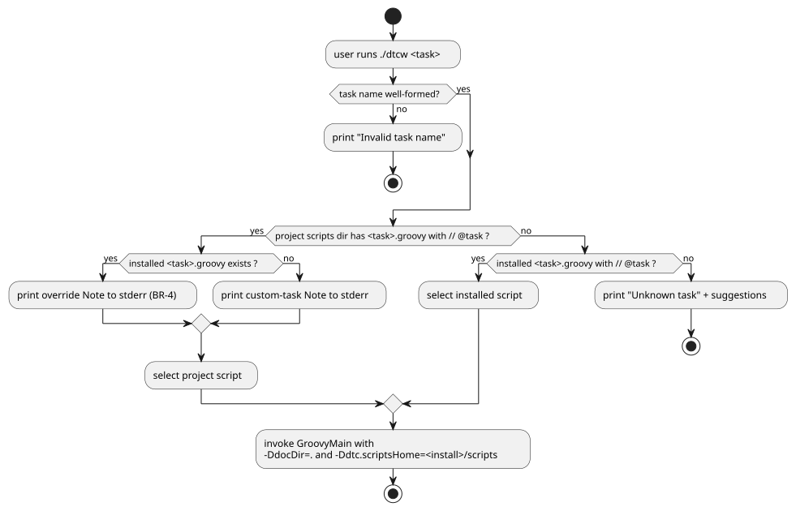

docToolchain v4 — Specification: Project-Local Tasks
.1. Problem and Goals (PRD digest)
Problem. A docToolchain v4 user can neither add their own task nor change a
shipped task without forking docToolchain or editing the shared installation
that every project on the machine inherits. The v3 mechanism
(customTasks.gradle) is Gradle-bound and dead under the Gradle-free v4 runtime.
Goals.
-
G-1 Custom tasks — a user adds a project-specific task and runs it via
dtcw, with no fork and no edit to a registry or config (concretises quality goal QS-1). -
G-2 Monkey-patching — a user copies an installed task into their project, edits it, and
dtcwruns the project copy instead of the shipped one, isolated to that project and committed alongside the docs. -
G-3 Transparency — an override is never silent; the user always sees that a patched task is running.
Personas. Documentation Author (runs tasks), Build/Tooling Maintainer (authors custom tasks and patches), CI pipeline (non-interactive runner).
Success criteria. A new marked script in the project appears in ./dtcw tasks
and runs; a same-named project script overrides the installed one and prints a
note; both load the bundled lib/ helpers without copying them into the project.
.2. Domain Terms (Ubiquitous Language)
| Term | Meaning |
|---|---|
Installed task |
A |
Project scripts directory |
Directory under the project root scanned for project tasks. Default |
Custom task |
A project task whose name matches no installed task — it adds a task. |
Override (monkey-patch) |
A project task whose name matches an installed task — it replaces it for this project. |
|
System property set by |
.3. Use Cases (Cockburn, fully dressed)
.3.1. UC-CT-1: Add a Custom Task
-
Primary Actor: Build/Tooling Maintainer
-
Level: User goal
-
Trigger: The maintainer needs a project-specific automation step (e.g.
exportNotion). -
Preconditions: docToolchain v4 is installed; the project has a
docToolchainConfig.groovy. -
Postconditions (success): A
*.groovytask exists in the project scripts directory and runs via./dtcw <name>; it appears in./dtcw tasks.
Main Success Scenario
-
Maintainer runs
./dtcw createTask exportNotion(or hand-creates the file). -
dtcwwritesscripts/exportNotion.groovywith a// @taskskeleton. -
Maintainer edits the script’s logic.
-
Maintainer runs
./dtcw exportNotion. -
dtcwdiscovers the project task, runs it, and prints a note that a project-local custom task is running.
Extensions
-
1a. Name invalid (BR-2):
createTaskaborts with an actionable message; no file written. -
1b. File already exists:
createTaskaborts and refuses to overwrite. -
4a. Marker missing or past line 5 (BR-1): the task is not discovered;
./dtcw tasksdoes not list it and./dtcw exportNotionreports "Unknown task".
Business Rules: BR-1, BR-2, BR-5.
.3.2. UC-CT-2: Monkey-Patch an Installed Task
-
Primary Actor: Build/Tooling Maintainer
-
Level: User goal
-
Trigger: A shipped task needs a project-specific change (e.g. tweak
generateHTMLattributes). -
Preconditions: The task to patch exists in the installation.
-
Postconditions (success): A project copy of the task runs instead of the installed one, for this project only; the installation is untouched.
Main Success Scenario
-
Maintainer runs
./dtcw copyTask generateHTML. -
dtcwcopies the installedgenerateHTML.groovyinto the project scripts directory. -
Maintainer edits the project copy.
-
Maintainer runs
./dtcw generateHTML. -
dtcwresolves the project copy first (BR-3), prints an override note to stderr (BR-4), and runs it; the copy loadslib/helpers from the installation (BR-6).
Extensions
-
1a. Installed task not found:
copyTaskaborts with the list of available tasks. -
2a. Project copy already exists:
copyTaskaborts and refuses to overwrite. -
4a. Maintainer deletes the project copy:
dtcwfalls back to the installed task, no note printed.
Business Rules: BR-3, BR-4, BR-6.
.4. System Use Cases (per CLI interface)
.4.1. SUC-1: ./dtcw <task> resolution
-
Input: a task name matching
^[a-zA-Z][a-zA-Z0-9_-]*$. -
Processing:
-
If
<projectScriptsDir>/<task>.groovyexists and is marked, select it; else if the installed script exists and is marked, select that; else fail. -
If a project script was selected and an installed script of the same name exists, emit an override note to stderr; if no installed counterpart exists, emit a custom-task note.
-
Invoke
java … groovy.ui.GroovyMain <selected script>with-DdocDir=.and-Ddtc.scriptsHome=<install>/scripts.
-
-
Output / status: exit 0 on success; exit
ERR_ARGfor an invalid or unknown task name; the selected script’s exit code otherwise. -
Error responses: invalid name → "Invalid task name"; unknown task → "Unknown task '<task>'" plus near-name suggestions and "Run './dtcw tasks'".
.4.2. SUC-2: ./dtcw tasks listing
-
Input: none (a trailing
--group …is accepted and ignored with a note). -
Processing: list installed tasks; annotate any that a project script overrides as
(overridden by …); then list project-only custom tasks under a separate heading. -
Output: the task list; exit 0.
.4.3. SUC-3: ./dtcw createTask [name]
-
Input: optional task name (default
customTask), validated by BR-2. -
Processing: create
<projectScriptsDir>/<name>.groovyfrom a marked skeleton. -
Output / status: path of the created file, exit 0; exit 2 on invalid name; exit 1 if the file exists.
.4.4. SUC-4: ./dtcw copyTask <name>
-
Input: required name of an installed task.
-
Processing: copy
<install>/scripts/<name>.groovyto<projectScriptsDir>/<name>.groovy. -
Output / status: path of the copy plus an override hint, exit 0; exit 2 if no name; exit 1 if the installed task is missing or the copy already exists.
.5. Activity Diagram — Task Resolution (SUC-1)
.6. Requirements (EARS)
-
EARS-1 (ubiquitous): The dtcw wrapper shall treat a
*.groovyfile as a task only if it carries// @taskwithin its first five lines. -
EARS-2 (event): When a task name is requested, dtcw shall resolve a project-local script in preference to an installed script of the same name.
-
EARS-3 (event): When dtcw runs a project-local script that shadows an installed task, dtcw shall emit a note to stderr identifying the overriding file.
-
EARS-4 (state): While running any v4 task, dtcw shall pass
-Ddtc.scriptsHomeset to the installed scripts directory. -
EARS-5 (event): When a requested task name matches neither a project nor an installed marked script, dtcw shall exit non-zero with an "Unknown task" message.
-
EARS-6 (unwanted): If
createTask/copyTaskwould overwrite an existing project file, then dtcw shall abort without modifying it.
.7. Business Rules
-
BR-1: A task is discoverable iff it is a
*.groovywith// @taskin its first five lines (consistent with ADR-14). -
BR-2: A task name must match
^[a-zA-Z][a-zA-Z0-9_-]*$. -
BR-3: Project scripts take precedence over installed scripts of the same name.
-
BR-4: Every override run prints a visible note; overrides are flagged in
./dtcw tasks. -
BR-5: Adding a custom task requires no edit to any config file or registry.
-
BR-6: A project script loads bundled
lib/helpers and resources from the installation viadtc.scriptsHome, never from the project.
.8. Acceptance Criteria (Gherkin)
Feature: Project-local custom tasks and monkey-patching
Scenario: Custom task is discovered (UC-CT-1, BR-1, BR-5)
Given a project scripts directory contains myCustomTask.groovy with a // @task marker
When the user runs ./dtcw tasks
Then "myCustomTask" appears under the project-local custom tasks heading
Scenario: Unmarked file is not a task (BR-1)
Given a project scripts directory contains justAHelper.groovy without a // @task marker
When the user runs ./dtcw tasks
Then "justAHelper" does not appear in the task list
Scenario: Custom task runs with the installation helpers (UC-CT-1, BR-6)
Given a project scripts directory contains myCustomTask.groovy with a // @task marker
When the user runs ./dtcw myCustomTask
Then dtcw runs the project script
And it passes -Ddtc.scriptsHome pointing at the installed scripts directory
Scenario: Override shadows the installed task and is announced (UC-CT-2, BR-3, BR-4)
Given an installed task generateHTML exists
And the project scripts directory contains generateHTML.groovy with a // @task marker
When the user runs ./dtcw generateHTML
Then dtcw runs the project copy, not the installed script
And dtcw prints a note that the installed task is being overridden
Scenario: Override is flagged in the task list (BR-4)
Given an installed task generateHTML exists
And the project scripts directory contains generateHTML.groovy with a // @task marker
When the user runs ./dtcw tasks
Then "generateHTML" is shown as overridden by the project script
Scenario: Unknown task is rejected (EARS-5)
Given no script named thisTaskDoesNotExist exists in the project or the installation
When the user runs ./dtcw thisTaskDoesNotExist
Then dtcw exits non-zero
And dtcw prints "Unknown task"
Scenario: copyTask refuses to overwrite (EARS-6, BR-3)
Given the project scripts directory already contains generateHTML.groovy
When the user runs ./dtcw copyTask generateHTML
Then dtcw aborts without modifying the existing file.9. Traceability
| Item | Realised by | Verified by |
|---|---|---|
UC-CT-1 / G-1 |
ADR-16, |
|
UC-CT-2 / G-2 |
ADR-16, |
|
G-3 / BR-4 |
dtcw override |
|
BR-6 / ADR-17 |
|
|
Feedback
Was this page helpful?
Glad to hear it! Please tell us how we can improve.
Sorry to hear that. Please tell us how we can improve.